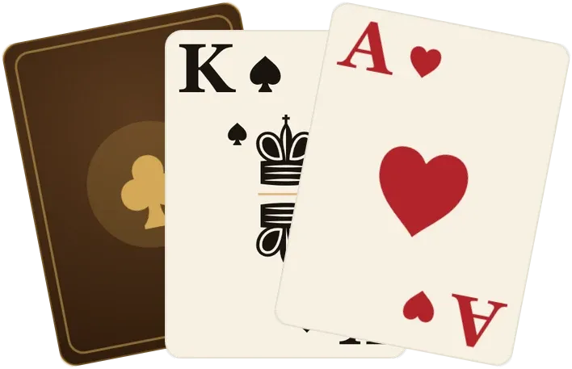
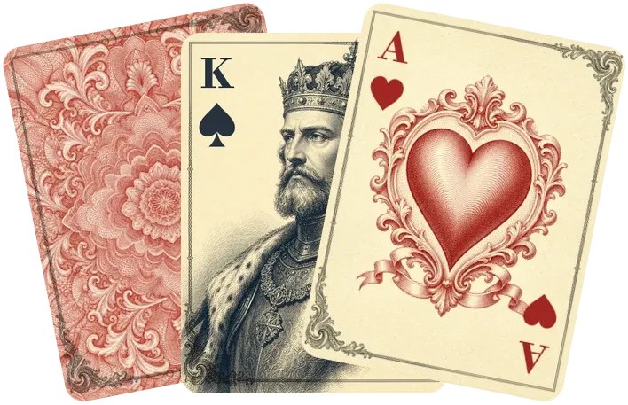
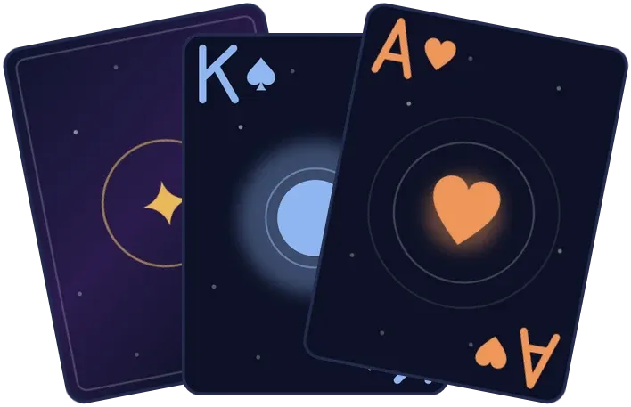
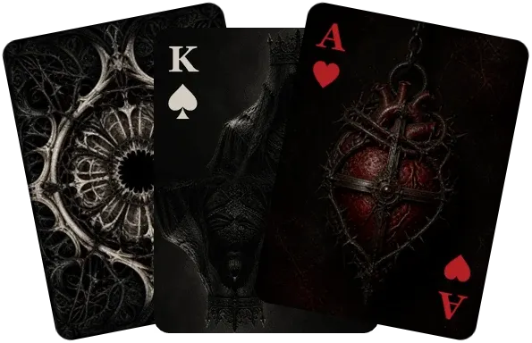
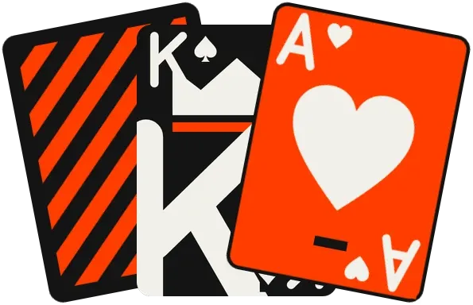
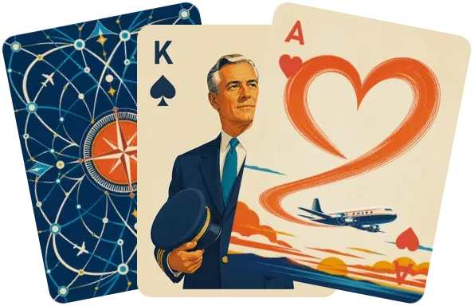

Felt House
La baraja de la casa, la que Cardz reparte hasta que eliges otra. Figuras, ases y comodines impresos en el patrón francés, números con serifa en las cartas numeradas y un reverso de filigrana de latón.
Barajas
Cambia cuando quieras, incluso a mitad de partida.

La baraja de la casa, la que Cardz reparte hasta que eliges otra. Figuras, ases y comodines impresos en el patrón francés, números con serifa en las cartas numeradas y un reverso de filigrana de latón.

Una baraja nórdica grabada en madera, con figuras de dos cabezas. Vale la pena encontrar la pareja de comodines Loki.

El antiguo Egipto sobre papiro. Un pequeño cartucho dorado junto a cada índice muestra el valor con el que esa carta suma trece, y eso resuelve buena parte de Pyramid con el rabillo del ojo.

Dioses pintados sobre mármol, con un índice dorado sobre la lámina.

Un libro de láminas de herbario en tinta y acuarela, con los cuatro palos como cuatro familias de plantas — rosa, caléndula, trébol, cardo — sobre una mesa de verde botánico profundo.

Grabada en tinta bermellón y tinta ferrogálica, el rojo y el negro clásicos, sobre un escritorio de cuero café.

Fina ornamentación victoriana sobre una mesa adamascada. La primera baraja ilustrada que trajo Cardz.
Ilustraciones de Nicu Buculei, de su baraja ornamental en OpenClipart. Cedidas al dominio público (CC0 1.0).

Una baraja espacial: cartas azul marino oscuro, palos en órbita, figuras celestes y cuatro colores de palo en lugar de los dos de siempre.

Unos recreativos a medianoche. Cartas casi negras iluminadas de cian y magenta, con figuras de dos cabezas que brillan. El letrero sobre la mesa zumba y parpadea mientras juegas.

Terror gótico en negro hollín, carmesí de sangre seca y ceniza de hueso, con retratos de figuras en espejo y ases en relicarios. La mesa es una piedra de altar iluminada por una vela que titila bajo las cartas.

Una baraja de Halloween de los 80 en una cinta de vídeo gastada: arte de carátula de película de terror, los rojos en magenta intenso y los negros en verde baba, cada as en un televisor embrujado, y dos comodines zombis. Líneas de barrido y una barra de tracking recorren toda la mesa. Desactiva los efectos de mesa y la cinta se pausa.

Formas de papel recortado en dos tintas sobre una mesa oscura: palos en rayas de conteo, y figuras reducidas a una corona, un orbe y una hoja.

Los viajes en avión de mediados de siglo como un soleado cartel de aerolínea. Las figuras son la tripulación, cada as es un avión que traza su palo en el cielo, los comodines vuelan en lista de espera, y los reversos son mapas de rutas en azul marino y naranja.

Naranja señal y negro sobre cartulina blanco hueso. Cada carta lleva su valor enorme, con barras de conteo en las cartas numeradas y ases inundados de su color, sobre una mesa de piedra clara.
Cardz también tiene una baraja de alto contraste, que sigue tu configuración de Windows, y una baraja para daltónicos con corazones y diamantes en azul frente a picas y tréboles en negro.